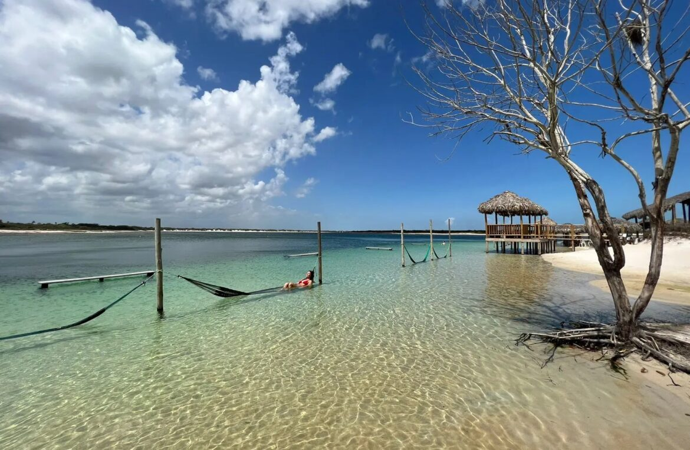
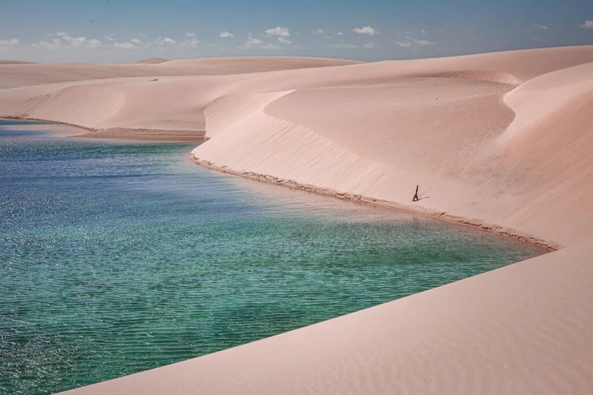
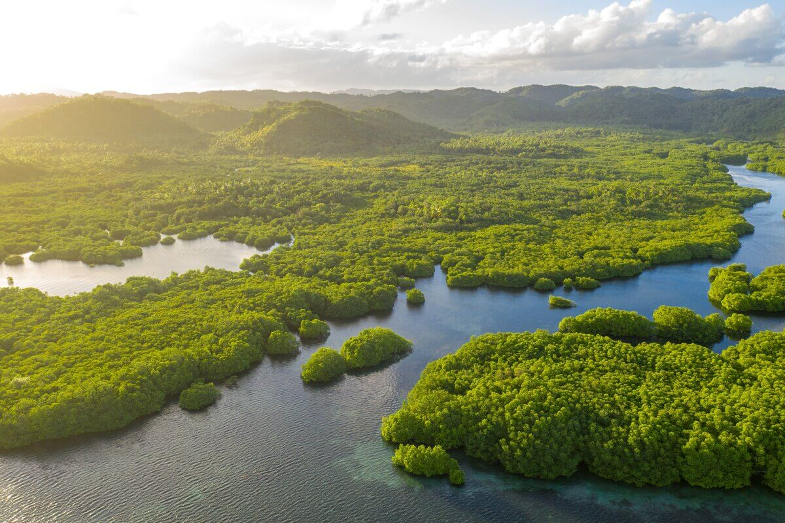
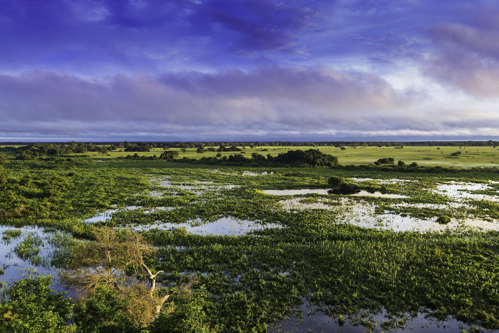
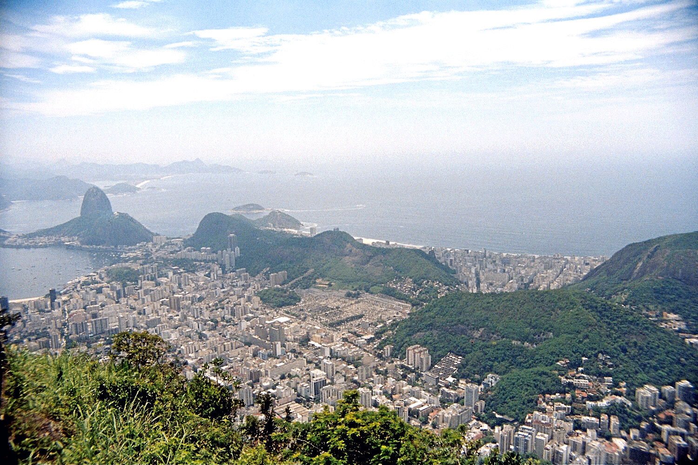
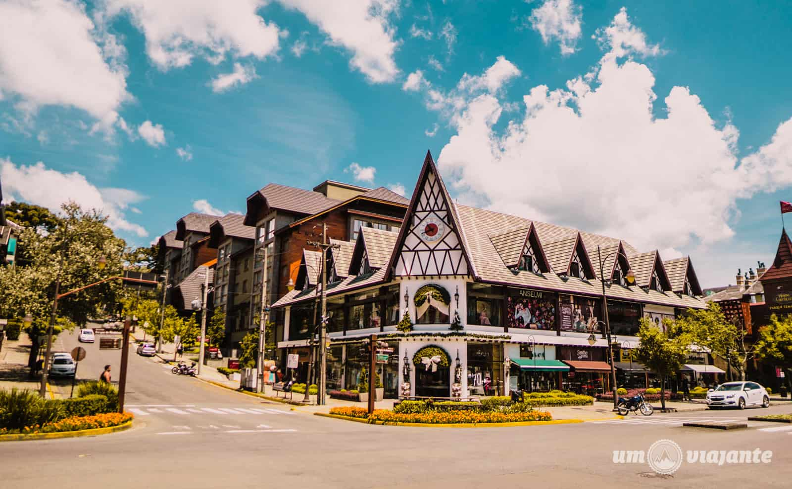
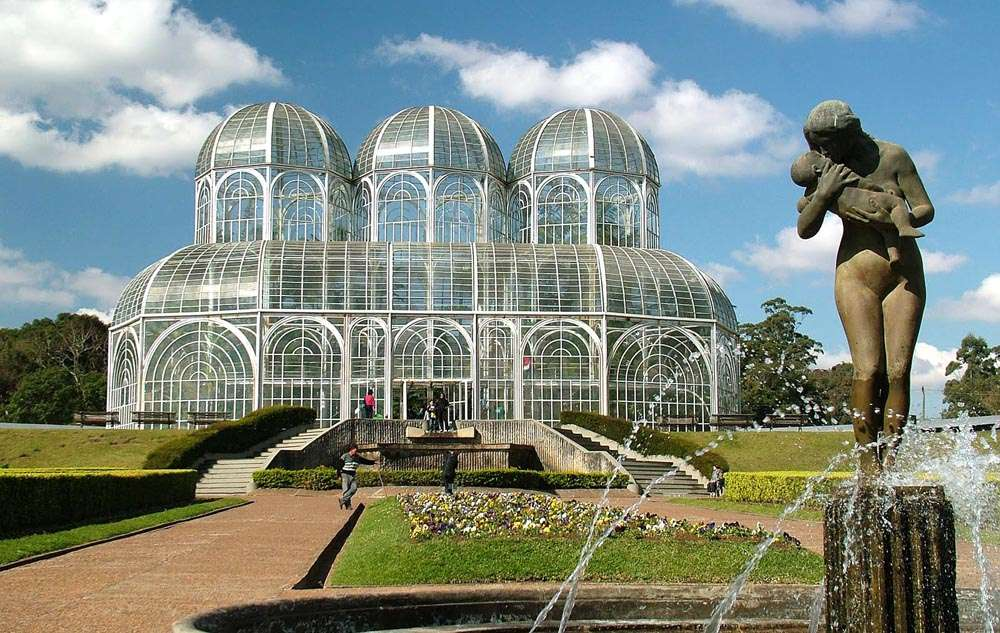
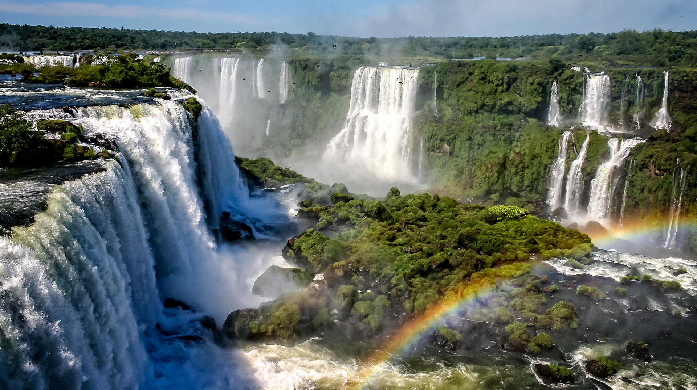
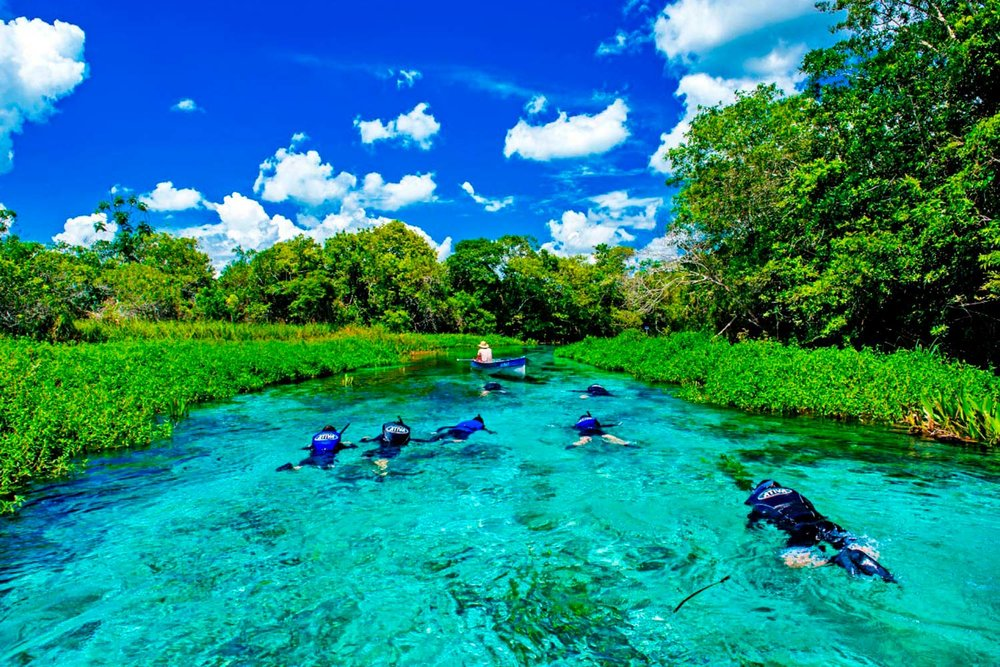

Brasil Viagens
Início
Sobre
Galeria
Contato
Galeria de Destinos
🌅 Norte e Nordeste
Maragogi (AL) - Caribe brasileiro

Jericoacoara (CE) - Dunas e lagoas

Lençóis Maranhenses (MA) - Dunas e lagoas

Amazônia - Maior floresta tropical
🏞️ Centro-Oeste e Sudeste
Chapada dos Guimarães (MT)

Pantanal (MS) - Biodiversidade

Rio de Janeiro (RJ) - Cristo Redentor
🏔️ Sul

Gramado (RS) - Influência europeia

Curitiba (PR) - Jardim Botânico
Florianópolis (SC) - Ilha da Magia
🌿 Extras culturais ou naturais

Cataratas do Iguaçu - Quedas d’água

Bonito (MS) - Rios cristalinos e grutas
Modo Escuro
×
‹
›